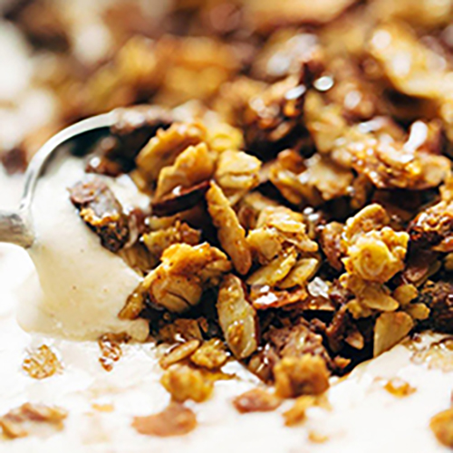

Pumpkin Granola that is both salty and sweet! Made with REAL PUMPKIN along
with oats, coconut, almonds, pistachios, maple syrup, cinnamon, and olive oil.
My favorite fall granola

INGREDIENTS
6 cups rolled oats
1 heaping cup sliced almonds
1 heaping cup pistachios (or other nuts)
1 heaping cup unsweetened flaked coconut
1 cup pumpkin puree
1 cup olive oil
1 cup maple syrup
2-3 teaspoons salt (see notes)
1-2 teaspoons cinnamon
INSTRUCTIONS
Prep the Pumpkin Granola: Preheat the oven to 350 degrees.
Mix the dry ingredients together (oats, almonds, pistachios, coconut).
Whisk the wet ingredients and spices together (pumpkin, olive oil, maple
syrup, salt, cinnamon). Pour wet ingredients over the dry ingredients and
stir to combine.
Bake the Pumpkin Granola: Spread the granola into a large nonstick jelly roll
pan or cake pan - I do this on two separate pans or in two batches. Bake for
15 minutes; stir; bake for another 15 minutes. Remove from oven and let rest -
it should start to crisp up.
Eat and love: Store in a plastic zip-top bag for a week or so. Serve
with granola, fruit, or just with good ol' milk.
NUTRITION FACTS
Serves 1
Calories Per Serving: 378